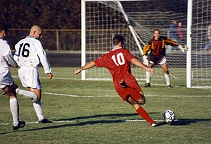
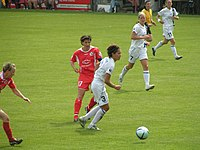

Fotbalul este un sport de echipă ce se dispută între două echipe alcătuite din 11 jucători fiecare. La începutul secolului al XXI-lea era jucat de peste 250 de milioane de jucători în peste 200 de țări, ceea ce îl face cel mai popular sport din lume. Se joacă cu o minge sferică pe un teren dreptunghiular, acoperit cu iarbă, cu câte o poartă la fiecare capăt. Scopul jocului este de a înscrie goluri introducând mingea în poarta adversarului. În afara portarului, ceilalți jucători nu se pot folosi de mâini pentru a manevra mingea. Câștigătorul meciului este echipa care a înscris mai multe goluri la încheierea partidei.
Originile fotbalului se află undeva în urmă cu peste 2000 de ani. În 2004, forul ce guvernează acest sport la nivel mondial FIFA (Fédération Internationale de Football Association)[5] a recunoscut China ca fiind locul de naștere al fotbalului. În jurul anului 200 î.e.n. chinezii jucau un sport asemănător numit cuju. Regulile au evoluat cu timpul, astfel ajungându-se la sportul practicat astăzi. În primăvara anului 2001, FIFA informa că peste 240 de milioane de oameni joacă regulat fotbal, în peste 200 de țări de pe întreg globul. Regulile sale simple și echipamentul redus și ieftin, necesar practicării fotbalului au contribuit, fără îndoială, la creșterea popularității sale. În multe zone ale lumii, fotbalul naște pasiuni enorme și joacă un rol foarte important în viața fanilor, a comunităților locale și chiar a națiunilor; este deseori numit cel mai popular sport din lume. Este recunoscut în multe țări drept: sportul rege.
Regulile jocului au fost conturate la mijlocul secolului al XIX-lea pentru a standardiza regulile unei mari varietăți de jocuri asemănătoare, jucate în școlile din Marea Britanie. Regulile Cambridge, asemănătoare cu cele de astăzi, au fost create la Colegiul Trinity din Cambridge, în 1848, la o întâlnire a reprezentanților mai multor colegii: Colegiul Eton, Școala Harrow, Școala de Rugby, Colegiul Winchester și Școala Shrewsbury. Dar, ele erau departe de a fi niște reguli universale. În anii 1850, s-au format multe cluburi, independente de școli sau universități, care jucau diferite forme de fotbal. Multe foloseau propriile lor reguli, cel mai bun exemplu fiind clubul Sheffield F.C. (format din foști elevi ai Scoala Harrow). Acesta a luat ființă în 1857, iar regulile create de ei au dus la formarea Federației de Fotbal Sheffield & Hallamshire, în 1867. În 1862, John Charles Thring de la Școala Uppingham a creat un alt set de reguli des folosit.
